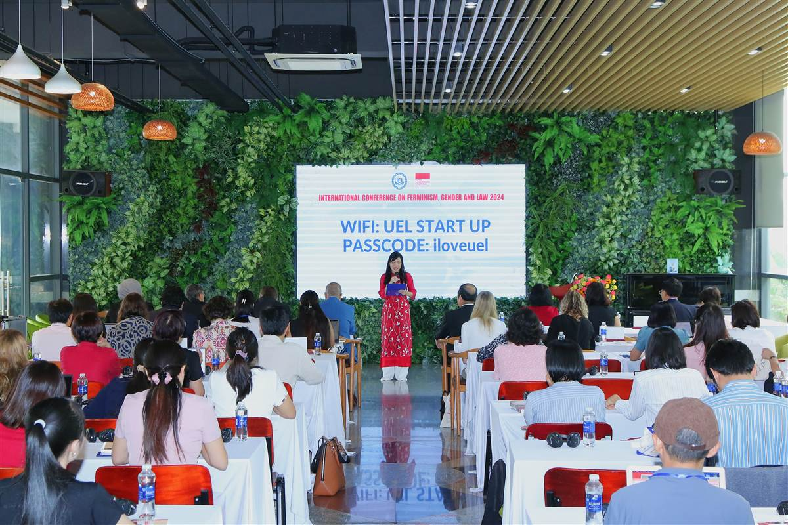

Conference Archive
A curated collection of public materials from ICFGL 2024, featuring conference documents, publications, speakers, and visual highlights.

Select a resource below to open the corresponding conference material, including a dedicated call for abstracts page with the full announcement and submission information.
Open the shared photo folder documenting conference moments, participants, and activities from the 2024 edition.
Access the revised proceedings volume containing abstracts and conference contributions prepared for ICFGL 2024.
View the final conference handbook with programme details, schedules, and reference information for attendees and readers.
See the conference editorial board page with the academic team supporting publication and review processes.
Open the keynote speakers page to review featured speakers and their roles within the ICFGL 2024 programme.
Read the full call for abstracts, including the conference rationale, suggested themes, submission requirements, and deadlines.